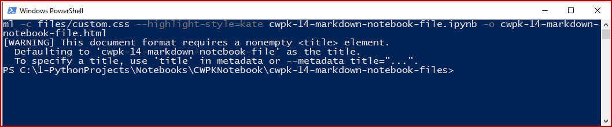

CWPK #15: Using Notebooks for CWPK Documentation
Recipes for Jupyter Notebooks Going Forward
In the last installment of the Cooking with Python and KBpedia series, we began to learn about weaving code and narrative in a Jupyter Notebook page. We also saw that we can generate narratives to accompany our code with the Markdown mark-up language, though it is not designed (in my view) for efficient document creation. Short explanations between code snippets are fine in Jupyter Notebook, but longer narratives or ones where formatting or decorating are required are fairly difficult. (For an update, see the NB box at the conclusion of this installment.) Further, we also want to publish Web pages independent of our environment. What I describe in this CWPK installment is how I combine standard Web page editing and publishing with Jupyter, as well as the starting parts to my standard workflow.
Having a repeatable and fairly efficient workflow for formulating a lesson or question, then scoping it out framed with introduction and working parts, and then skeletonizing it such that good working templates can be put in place is important when one contemplates progressing through all of the stages of discovering, addressing, and documenting a project. In the case of this CWPK series, this is not a trifling consideration. I am anticipating literally dozens of installments in this series; heck, we are already at installment #15 and we haven't begun yet to code anything in Python! We could stitch together more direct methods of doing a given task, but that will not necessarily arm us to do a broader set of tasks.
Not everyone prefers my style of trying to get systems and game plan in place before tackling a big task, in which case I suggest you skip to the end where we conclude with a discussion of directory organization. For this initial part, however, I will assume that you want to sometimes rely on an interacting coding environment and other times want to generate narratives efficiently. In this use case, the ability to 'round-trip' between HTML editing and Jupyter is an important consideration. Efficiency and document size are relevant considerations, too.
Recall in our last installment that we pointed to two ways to get HTML pages from a Jupyter Notebook: 1) either from a download, or 2) from invoking the nbconvert service from a command window. We could not invoke nbconvert from within a notebook page because it is a Jupyter service. This next frame shows the file created from the article herein using the download method. You invoke the cell by entering shift+enter to call up the file, and then, once inspected, use Cell → All Output → Clear to clear and collapse the view area:
with open('files/cwpk-15-using-notebooks-download.txt', 'r') as f:
print(f.read())
I should mention that both the nbconvert and download methods produce similarly bloated files. Go ahead, scroll through it. While the generated file renders very well, it is about 10x larger than the original HTML file that captures its narrative (13,644 v 397 lines; 298 K v 30 K). This bloat in file size is due to the fact that all of the style information (*.css) contained in the original document gets re-expressed in this version, along with much other styling information not directly related to this page. Thus, while the generation of the page is super easy, and renders beautifully, it is an overweight pig. We could spend some time whittling down this monster to size with some of the built-in functionality of nbconvert, but why not deal that problem using Pandoc directly upon which nbconvert is based?
So, in testing the cycle from HTML to notebooks and back again, we find that certain aspects of generating project documentation present challenges. In working through the documentation for this series I have found these types of problem areas for round-tripping:
- Use of a standard, formatted header (with logo)
- Use of standard footers (notification boxes in our case)
- Centering images
- Centering text
- Tables, and
- Loss of the interactive functionality in the notebook in the HTML.
Only the last consideration is essential to create useful project and code documentation. However, if one likes professional, well-formatted pages with loads of images and other pretty aspects, it is worth some time to work out productive ways to handle these aspects. In broad terms, for me, that means to be able to move between Web page authoring and interactive code development, testing, and documentation. I also decided to devote some time to these questions as a way to better understand the flexibilities and power of the tools we have chosen. We will always encounter gaps in knowledge when working new problems. I'd like to find the practical balance between the de minimus path to get something done with learning enough to be able to travel similar paths in the future, perhaps even in a production mode.
Since Markdown is a superset of HTML it is not possible to round-trip using Markdown alone within Jupyter Notebook. Fortunately, many Markdown interpreters, including Jupyter, accept some limited HTML in documents. There are two ways that may happen. The first is to use one of the so-called 'magic' terms in iPython, the command shell underneath Jupyter Notebook. By placing the magic term %%html at the start of a notebook Markdown cell, we instruct the system to render that entire cell as HTML. Since it is easy to stop a cell and add a new one below it, we can 'fence' such aspects easily in our notebook code bases. I encourage you to study other 'magic' terms from the prior link that are shortcuts to some desired notebook capabilities.
A second way to use HTML in notebooks is to embed HTML tags. This way is trickier since the various Markdown evaluation engines -- due to Markdown's diversity of implementations -- may recognize different tags or, when recognized, treat them differently. One of the reasons to embrace Pandoc, introduced in the last installment, is to accept its standard way of handling languages, markups, formats, and functions.
Boiled down to its essence, then, we have two functional challenges in round-tripping:
- Loss of HTML tags and styling with Markdown
- Loss of notebook functionality in HTML.
One of Pandoc's attractions is that both <div> and <span> can be flagged to be skipped in the conversions, which means we can isolate our HTML changes to these tag types, with divs giving us block 'fencing' capabilities and spans inline 'fencing' capabilities. (There are also Lua filter capabilities with Pandoc to provide essentially unlimited control over conversions, but we will leave that complexity outside of our scope.) Another observation we make is that many of the difficult tags that do not round-trip well deal with styling or HTML tags that can be captured via CSS styling.
Another challenge that must be deciphered are the many flavors of Markdown that appear in the wild. Pandoc handles many flavors of Markdown, including the specified readers of markdown, markdown_strict, markdown_mmd, markdown_phpextra, and gfm (GitHub-flavored Markdown). One can actually ingest any of these flavors in Pandoc and express any of the others. As I noted in the last installment, Pandoc presently has 33 different format readers from Word docs to rich text and can write out nearly twice that many in different formats. For our purposes, however, it is best to choose Pandoc's canonical internal form of markdown. However, besides translation purposes, the gfm option likely has the broadest external applicability.
OK, so it appears that Pandoc's own flavor of Markdown is the best conversion target and that we will try to move problem transfer areas to div and span. As for the loss of notebook functionality in HTML, there is no direct answer. However, because an interactive notebook page is organized in a sequence of cells, we can segregate activity areas from interactive areas in our documents. That does not give us complete document convertibility, but we can do it in sections if need be after initial drafting. With this basic approach decided, we begin to work through the issues.
After testing inline styling, we see that we can find recipes that move the CSS and related HTML (such as <center> or <i> or <italics>) between our HTML and notebook environments without loss. Once we go beyond proofs of concept, however, we want to be able to capture our CSS information in styling class and ID designations so that we not need to duplicate lengthy styling code. However, handling and referencing CSS stylesheets is not straightforward with the complexity of applications and configuration files of an Anaconda Python distribution and environment. For a very useful discussion of CSS in this context see Jack Northrup's notebook on customizing CSS
Now, the tools at both ends of this process, Jupyter Notebook and Pandoc, both recognize users will want their own custom.css files to guide these matters. But, of course, each tool has a different location and mechanism for specifying this. There is surprisingly little documentation or guidance on the Web for how to handle these things. Most of the references I encountered on these matters were incorrect. We have two fundamental challenges in this quest: 1) how do we define and where do we locate our custom.css file on disk?; and 2) what are our command-line instructions to best guide the two round-trip conversion steps? We will use Pandoc and proper stylesheet locations to guide both questions.
Let's take the first trip of moving from HTML draft into an operating shell for Jupyter Notebook. First, as we draft material with an HTML editor, we are going to want to store our custom.css information that we need to segregate into some pre-defined, understood location. One way to do that is through a relative location in relation to where our authored HTML document resides. An easy choice is to create a sub-directory of files that is placed immediately below where our HTML document resides. If we follow this location, we may always find the stylesheet (CSS) in the relative location of 'files/custom.css'. (You may name the subdirectory something different, but it is probably best to retain the name of 'custom.css' since that is expected by Jupyter.) However, those same CSS specifications need to be available to Jupyter Notebook, which follows different file look-up conventions. One way to discover where Jupyter Notebook expects to find its supplementary CSS files is to open the relevant notebook page and save it as HTML (download or nbconvert or Pandoc methods). When you open the HTML file with an editor, look for the reference to 'custom.css'. That will give you the file location in relation to your document's root. In my case, this location is C:\1-PythonProjects\Python\Lib\site-packages\notebook\static\custom. For your own circumstance, it may also be under the \user\user\ profile area depending on whether you first installed Anaconda for an individual user. At any rate, look for the \Lib\ directory and then follow the directory cascade under your main Python location.
NB: Unfortunately, should you later update your Jupyter Notebook package, you may find that your custom.css is overwritten with the standard, blank placeholder. You may again need to copy your active version into this location.
Once you have your desired CSS both where Pandoc will look for it (again, relative is best) and where Jupyter Notebook will separately look for it, we can concentrate on getting our additional styles into custom.css, which you may click on to see its contents for this current page. Once we have populated custom.css, it is now time to figure out the conversion parameters. There is much flexibility in Pandoc for all aspects of instructing the application at the command line. I present one hard-earned configuration below, but for your own purposes, I strongly recommend you inspect the PDF version of the Pandoc User Guide should you want to pursue your own modifications. At any rate, here is the basic HTML → Notebook initial conversion, using this current page as the example:
$ pandoc -f html -t ipynb+native_divs cwpk-15-using-notebooks.html -o cwpk-15-using-notebooks.ipynb
Here is what these command-line options and switches mean:
-f html - -f (also --from) is the source or from switch, with html indicating the source format type. Multiple types are possible, but only one may be specified at a time-t ipynb - -t (also --to) is the target of the conversion, with ipynb in this case indicating a notebook document. Multiple types are possible, but only one may be specificed here+native_divs - this is a conversion switch that tells Pandoc to retain the content within a native HTML div in the source
cwpk-15-using-notebooks.html - this is the source file specification. There are defaults within Pandoc that allow -f html to not be specified, for example and for other formats, once this input file type is specified-o cwpk-15-using-notebooks.ipynb - this is the output (-o) file name; if left unspecified, the default is to write the original file name with the new .ipynb extension (or whatever target format was specified).
These commands and switches require the Windows command window or PowerShell to be opened in the same directory as the *.html document you are converting when you instruct at the command line. Upon entering this command, the appearance of the prompt tells you the conversion proceeded to completion.
This command will now establish a new notebook file (*.ipynb) in the same directory. Please make sure this directory location is under the root you established when you installed Jupyter Notebook (see CWPK #10 if you need to refresh that or change locations).
When you invoke Jupyter Notebook and call up the new *.ipynb file, it will open as a single Markdown cell. If you need to split that input into multiple parts in order to interweave interactive parts, double-click to edit, cut the sections you need to move, Run the cell, add a cell below, and paste the split section into the new cell. In this way, you can skeletonize your active portions with existing narrative.
Upon completing your activities and additions and code tests within Notebook, you may now save out your results to HTML for publishing elsewhere. Again, you could Download or use nbconvert, but to keep our file sizes manageable and to give ourselves the requisite control we will again do this conversion with Pandoc. After saving your work and exiting to the command window, and while still in the current working directory where the *.ipynb resides, go ahead and issue this command at the command window prompt:
$ pandoc -s -f ipynb -t html -c files/custom.css --highlight-style=kate cwpk-15-using-notebooks.ipynb -o cwpk-15-using-notebooks-test.html
There we have it! We now have our recipes to move from HTML to *.ipynb and the reverse!
Here is what the new command-line options and switches mean:
We have now reversed the -f and -t switches since we are now exporting as HTML; again, multiple format options may be substituted here (though specific options may change depending on format)
-s means to process the export as standalone, which will bring in the HTML information outside of the <body> tags-c (or --css=) tells the writer where to find the supplementary, external CSS file. This example is the files subdirectory under the current notebook; the file could be whatever.css, but we keep the custom.css name to be consistent with the required name for Jupyter (even though in a different location)--highlight-style=kate is one of the language syntax highlighting options available in Pandoc; there are many others available and you may also create your own-o cwpk-15-using-notebooks-test.html - is an optional output only if we want to change the base name from the input name; during drafting it is recommended to use another name (-test) to prevent inadvertent overwriting of good files.
Upon executing this command, you will get a successful export, but a message indicating you did not provide a title for the project and it will default to the file name as shown by Figure 1:

Figure 1: Message at HTML Export
There are metadata options you may assign at the command line, plus, of course, many other configuration options. Again, the best consolidated source for learning about these options is in the PDF Pandoc Users Guide. This document is kept current with the many revisions that occur frequently for Pandoc.
The next panel shows the HTML generated by this export. Note this document is much smaller (10x) than the version that comes from the download or nbconvert methods:
with open('files/cwpk-15-using-notebooks-html.txt', 'r') as f:
print(f.read())
This HTML export is good for publication purposes, but lacks the interactivity of its interactive parent. You should thus refrain from such exports until development is largely complete. In any case, we still see static sections for the interactive portions of the notebook. These were styled according to custom.css.
NB: The Web pages that appear on my AI3 blog are the HTML conversions of these interactive notebook pages. The information box at the bottom of each installment page instructs as to where you may obtain the fully interactive versions.
Using similar commands you can also produce outputs in other formats, such as this one for the GitHub flavor of Markdown using this command line instruction:
$ pandoc -s -f ipynb -t gfm -c files/custom.css --highlight-style=kate cwpk-15-using-notebooks.ipynb
Note we have changed the -t to option to gfm and have removed the -o output option because we will use the same notebook file name. Here is the output from that conversion:
with open('files/cwpk-15-using-notebooks-md.txt', 'r') as f:
print(f.read())
You can see that headers are more cleanly shown by # symbols, and that gfm is a generally clean design. It is becoming the de facto standard for shared Markdown.
Of course, no export is necessary for the actual notebook file since they are plain text. As noted in earlier installments, Jupyter Notebook files are natively expressed in JavaScript Object Notation (JSON). This is the only file representation that contains transferrable instructions for the interactive code cells in the notebook page. This JSON file is for the same content expressed in the files above:
with open('files/cwpk-15-using-notebooks-ipynb.txt', 'r') as f:
print(f.read())
Mastery of these tools is a career in itself. I'm sure there are better ways to write these commands or even how to approach the workflow. As the examples presently stand there are a few minor glitches, for example, that keep this round-tripping from being completely automatic. Relative file locations get re-written with an 'attachment:' prefix during the round-trip, which must be removed from the HTML code to get images to display. For some strange reason, images also need to have a width entry (e.g., width="800") in order not to be converted to Markdown format. Also, in some instances HTML code within a div gets converted to Markdown syntax, which then can not be recognized when later writing to HTML. The Pandoc system is full-featured and difficult to master without, I am sure, much use.
In working with these tools, here is what I have discovered to be a good starting workflow:
- Author initial skeleton in HTML. Write intro, get references and links, set footer. Try to use familiar editing tools to apply desired formatting and styles
- Add blocks and major steps, including some thought for actual interactive pieces; name this working file with an
-edit name extension to help prevent overwriting it
- Convert to Notebook format and transfer to notebook
- Work on interaction steps within Jupyter Notebook, one by one. Add narrative lead in and following commentary to each given step. If the narrative is too long or too involved to readily handle in the notebook with Markdown, save, revert to the HTML version for the interstitial narrative Markdown cell
- Generate Markdown for the connecting cell, copy back into the working notebook page
- Repeat as necessary to work through the interaction steps
- Save, and generate the new notebook
- Export to multiple publication platforms.
Directory and File Structure
These conversion efforts have also helped refine some of the directory refinements useful to this workflow. I first began laying out a broad directory structure for this project in CWPK #9. We can now add a major branch under our project for notebooks, with a major sub-branch being this one for the CWPK series. I personally use CamelCase for naming my upper directory levels, those I know will likely last for a year or more. Lower levels I have tended to lower case and hyphen separate more akin to a consistent treatment on Linux boxes.
Here is how I am setting up my directory structure:
|-- PythonProject # directory first introduced in CWPK #9
|-- Python
|-- [Anaconda3 distribution]
|-- Notebooks # see next directory expansion
|-- CWPKNotebook
|-- TBA # We'll add to this directory structure as we move on
|-- TBA
Individual notebooks should live in their own directory along side any ancillary files related to them. For example:
Notebooks/
|-- CWPKNotebook
| |-- cwpk-1-installment # one folder/notebook per installment
| |-- .ipyn_checkpoints # created automatically as notebooks are saved and checkpointed
| +-- cwpk-1-installment.ipynb # backup file from checkpoint, same name as current
| +-- cwpk-1-installment.ipynb # current active notebook file
| +-- cwpk-1-installment-edit.html # initial drafting file named differently to prevent overwriting
| +-- cwpk-1-installment.html
| |-- files # a sub-directory for all supporting files for that installment
| +-- custom.css # same across installments, + one in the Jupyter Notebook settings
| +-- image-1.png
| +-- image-2.jpg
| +-- attachment.txt
| |-- cwpk-2-installment
| +-- etc.
| |-- cwpk-3-etc.
Note that Save and Checkpoint within Jupyter Notebook automatically creates a .ipynb_checkpoints subdirectory and populates it with the current version of the *.ipynb file. (So, don't mix up the current file in the parent directory with this backup one.) Further, it is perhaps better to create a more streamlined version of this directory structure that would place all notebook files (*.ipynb) in a single directory with a single location for the custom.css. That approach requires more logic in the application and is harder to include in a lesson. One advantage of the somewhat duplicative structure herein is that we are able to treat each notebook installment as a standalone unit.
NB: From the perspective of CWPK #60 looking back, I find that my assumptions of how I would use Jupyter Notebook did not prove to be exactly accurate. In fact, I have found using Notebooks to be tremendously helpful and productive for all drafting activities. I like the way that the flow of cells, either code or Markdown, can lead to productive drafting. My actual experience going forward is that I completely ceased using HTML or Web pages for any drafting. The interactive notebook environment has proven to be a real favorite with me. True, I now do more drafting directly using Markdown, but even that has proven to be quick and productive.
This installment completes our first major section on set-up and configuration of our working environment. In our next installment we switch gears to working with Python and lay out our game plan for doing so.
NOTE: This [CWPK
installment](/cooking-with-python-and-kbpedia/) is available as a
Jupyter Notebook file. Please [download the file](/cwpk13.ipynb/) and
place it an appropriate location on your local hard drive. You may also
[
advance](/cwpk14.ipynb/) to the
next lesson or [
return](/cwpk15.ipynb/) to the prior
lesson.
I am at best an amateur with Python. There are likely more efficient methods for coding these steps than what I provide. I encourage you to experiment -- which is part of the fun of Python -- and to
notify me should you make improvements.